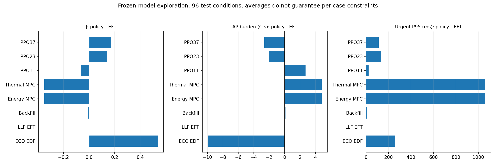
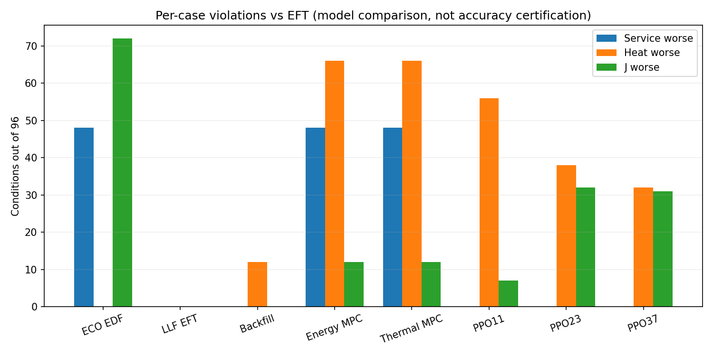
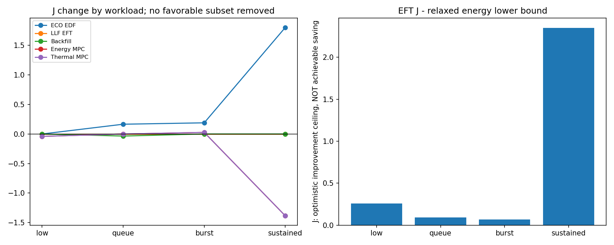

실측 모형과 공통 처리시간 전이 가정에 따른 계산입니다. 새 실기기 절감이나 정확도 PASS가 아닙니다. 기한 충족과 완료, 에너지와 열 상충, 평균과 조건별 손해를 나눠 읽습니다. 계산비용은 PC callback wall time이며 시뮬레이터의 추가 정책 비용0 가정 밖입니다.
설계·결론·재현 · 개발/시험1440행 · 대응차이 · 시험 전 선정
개발에서 고정한 후속후보: LLF_EFT_V1. 최종평가를 본 뒤 다른 후보로 갈아타거나 재조정하지 않았습니다.



| family | policy | conditions | deadline_met | planned | delta_j | delta_ap_area | delta_peak | delta_p95 | service_worse | heat_worse | j_worse | all_guard | mean_host_callback_p95_ms |
|---|---|---|---|---|---|---|---|---|---|---|---|---|---|
| all | CPU_REFERENCE | 96 | 6129 | 6336 | 0.5393954695206823 | -9.937505188713308 | -0.17638296244166787 | 256.32298069791665 | 48 | 0 | 72 | 24 | None |
| all | SPLIT_REFERENCE | 96 | 6249 | 6336 | 0.3504447249240397 | 5.769185364916598 | 0.08475899608657118 | 82.17064672916666 | 0 | 90 | 53 | 6 | None |
| all | EFT_REFERENCE | 96 | 6217 | 6336 | 0.0 | 0.0 | 0.0 | 0.0 | 0 | 0 | 0 | 96 | None |
| all | ECO_EDF_V1 | 96 | 6129 | 6336 | 0.5393954695180051 | -9.93750518876581 | -0.17638296244216403 | 256.32298069791665 | 48 | 0 | 72 | 24 | 0.25677395630433847 |
| all | LLF_EFT_V1 | 96 | 6217 | 6336 | 0.0 | 0.0 | 0.0 | 0.0 | 0 | 0 | 0 | 96 | 0.22117083790362813 |
| all | RESERVED_BACKFILL_V1 | 96 | 6222 | 6336 | -0.008667520160743495 | 0.12261550361761901 | 0.0035316280914929887 | 11.290247208333335 | 0 | 12 | 0 | 84 | 1.035439582968441 |
| all | PARETO_MPC_V1 | 96 | 5714 | 6336 | -0.34953637906838225 | 4.801562852273881 | 0.05209187016104163 | 1059.677679875 | 48 | 66 | 12 | 18 | 7.425200000094871 |
| all | THERMAL_MPC_V1 | 96 | 5714 | 6336 | -0.34953637906838225 | 4.801562852273881 | 0.05209187016104163 | 1059.677679875 | 48 | 66 | 12 | 18 | 7.525267697928939 |
| all | PPO_seed11 | 96 | 6236 | 6336 | -0.0618997755017873 | 2.709986287141841 | 0.03927167609813864 | 22.420481145833335 | 0 | 56 | 7 | 40 | None |
| all | PPO_seed23 | 96 | 6232 | 6336 | 0.14026032430466126 | -1.9982197238133619 | -0.01551054727733725 | 135.53863141666668 | 0 | 38 | 32 | 37 | None |
| all | PPO_seed37 | 96 | 6236 | 6336 | 0.17358725861224014 | -2.6210945339994978 | -0.08154252549082068 | 114.52648396875 | 0 | 32 | 31 | 40 | None |
| family | policy | conditions | deadline_met | planned | delta_j | delta_ap_area | delta_peak | delta_p95 | service_worse | heat_worse | j_worse | all_guard | mean_host_callback_p95_ms |
|---|---|---|---|---|---|---|---|---|---|---|---|---|---|
| low | CPU_REFERENCE | 24 | 576 | 576 | 0.0 | 0.0 | 0.0 | 0.0 | 0 | 0 | 0 | 24 | None |
| low | SPLIT_REFERENCE | 24 | 576 | 576 | 0.2855510426356318 | 1.7888165608430624 | 0.04738612115257723 | 137.87470399999998 | 0 | 24 | 24 | 0 | None |
| low | EFT_REFERENCE | 24 | 576 | 576 | 0.0 | 0.0 | 0.0 | 0.0 | 0 | 0 | 0 | 24 | None |
| low | ECO_EDF_V1 | 24 | 576 | 576 | 0.0 | 0.0 | 0.0 | 0.0 | 0 | 0 | 0 | 24 | 0.076299998909235 |
| low | LLF_EFT_V1 | 24 | 576 | 576 | 0.0 | 0.0 | 0.0 | 0.0 | 0 | 0 | 0 | 24 | 0.0760791590437293 |
| low | RESERVED_BACKFILL_V1 | 24 | 576 | 576 | 0.0 | 0.0 | 0.0 | 0.0 | 0 | 0 | 0 | 24 | 0.05487083884266516 |
| low | PARETO_MPC_V1 | 24 | 576 | 576 | -0.040147849929798696 | 0.7143247110992449 | 0.019280712575518038 | 1216.8640604166667 | 0 | 24 | 0 | 0 | 5.9769333408136545 |
| low | THERMAL_MPC_V1 | 24 | 576 | 576 | -0.040147849929798696 | 0.7143247110992449 | 0.019280712575518038 | 1216.8640604166667 | 0 | 24 | 0 | 0 | 6.03144580963999 |
| low | PPO_seed11 | 24 | 576 | 576 | 0.0 | 0.0 | 0.0 | 0.0 | 0 | 0 | 0 | 24 | None |
| low | PPO_seed23 | 24 | 576 | 576 | 0.0 | 0.0 | 0.0 | 0.0 | 0 | 0 | 0 | 24 | None |
| low | PPO_seed37 | 24 | 576 | 576 | 0.0 | 0.0 | 0.0 | 0.0 | 0 | 0 | 0 | 24 | None |
| queue | CPU_REFERENCE | 24 | 456 | 576 | 0.16534659913423985 | -2.381751790553872 | -0.08606349059424279 | 401.97590045833334 | 24 | 0 | 24 | 0 | None |
| queue | SPLIT_REFERENCE | 24 | 522 | 576 | -0.061490739712178076 | 1.2332223986392303 | 0.03965064889234796 | 60.872322916666675 | 0 | 21 | 3 | 3 | None |
| queue | EFT_REFERENCE | 24 | 499 | 576 | 0.0 | 0.0 | 0.0 | 0.0 | 0 | 0 | 0 | 24 | None |
| queue | ECO_EDF_V1 | 24 | 456 | 576 | 0.16534659913423985 | -2.381751790553872 | -0.08606349059424279 | 401.97590045833334 | 24 | 0 | 24 | 0 | 0.3872999902038525 |
| queue | LLF_EFT_V1 | 24 | 499 | 576 | 0.0 | 0.0 | 0.0 | 0.0 | 0 | 0 | 0 | 24 | 0.34142917138524354 |
| queue | RESERVED_BACKFILL_V1 | 24 | 504 | 576 | -0.03467008064297398 | 0.49046201447047605 | 0.014126512365971955 | 45.16098883333334 | 0 | 12 | 0 | 12 | 1.9113666494376957 |
| queue | PARETO_MPC_V1 | 24 | 496 | 576 | -4.3349028070830777e-11 | 0.003695538336006887 | 0.002163102285510495 | 16.736253374999993 | 3 | 9 | 0 | 15 | 7.878441659462017 |
| queue | THERMAL_MPC_V1 | 24 | 496 | 576 | -4.3349028070830777e-11 | 0.003695538336006887 | 0.002163102285510495 | 16.736253374999993 | 3 | 9 | 0 | 15 | 8.278524993026318 |
| queue | PPO_seed11 | 24 | 515 | 576 | -0.0418586730276805 | 0.7022330889759254 | 0.019747958209797318 | 23.64343783333334 | 0 | 16 | 2 | 8 | None |
| queue | PPO_seed23 | 24 | 511 | 576 | -0.030160393499543876 | 0.557533589282719 | 0.014088328633133695 | 70.44556091666666 | 0 | 19 | 3 | 5 | None |
| queue | PPO_seed37 | 24 | 515 | 576 | -0.0418586730276805 | 0.7022330889759254 | 0.019747958209797318 | 23.64343783333334 | 0 | 16 | 2 | 8 | None |
| burst | CPU_REFERENCE | 24 | 489 | 576 | 0.18905651078048655 | -2.6915864709540274 | -0.09197574649619122 | 184.9634727083333 | 24 | 0 | 24 | 0 | None |
| burst | SPLIT_REFERENCE | 24 | 543 | 576 | -0.04370711043275103 | 0.9542952774383795 | 0.0350932418719497 | 129.93556 | 0 | 21 | 2 | 3 | None |
| burst | EFT_REFERENCE | 24 | 534 | 576 | 0.0 | 0.0 | 0.0 | 0.0 | 0 | 0 | 0 | 24 | None |
| burst | ECO_EDF_V1 | 24 | 489 | 576 | 0.18905651078048655 | -2.6915864709540274 | -0.09197574649619122 | 184.9634727083333 | 24 | 0 | 24 | 0 | 0.3910708425488944 |
| burst | LLF_EFT_V1 | 24 | 534 | 576 | 0.0 | 0.0 | 0.0 | 0.0 | 0 | 0 | 0 | 24 | 0.3160125100597118 |
| burst | RESERVED_BACKFILL_V1 | 24 | 534 | 576 | 0.0 | 0.0 | 0.0 | 0.0 | 0 | 0 | 0 | 24 | 1.9605625081264104 |
| burst | PARETO_MPC_V1 | 24 | 501 | 576 | 0.027029281080440153 | -0.4331056487053206 | -0.010398641445828213 | 258.9748774583333 | 21 | 9 | 12 | 3 | 8.211166660961075 |
| burst | THERMAL_MPC_V1 | 24 | 501 | 576 | 0.027029281080440153 | -0.4331056487053206 | -0.010398641445828213 | 258.9748774583333 | 21 | 9 | 12 | 3 | 8.197649998085884 |
| burst | PPO_seed11 | 24 | 537 | 576 | -0.02534201413863239 | 0.5886258430679844 | 0.022168149935914244 | 66.03848675 | 0 | 16 | 5 | 8 | None |
| burst | PPO_seed23 | 24 | 537 | 576 | -0.02534201413863239 | 0.5886258430679844 | 0.022168149935914244 | 66.03848675 | 0 | 16 | 5 | 8 | None |
| burst | PPO_seed37 | 24 | 537 | 576 | -0.02534201413863239 | 0.5886258430679844 | 0.022168149935914244 | 66.03848675 | 0 | 16 | 5 | 8 | None |
| sustained | CPU_REFERENCE | 24 | 4608 | 4608 | 1.803178768168003 | -34.67668249334533 | -0.5274926126762375 | 438.352549625 | 0 | 0 | 24 | 0 | None |
| sustained | SPLIT_REFERENCE | 24 | 4608 | 4608 | 1.2214257072054562 | 19.10040722274572 | 0.21690597242940987 | 0.0 | 0 | 24 | 24 | 0 | None |
| sustained | EFT_REFERENCE | 24 | 4608 | 4608 | 0.0 | 0.0 | 0.0 | 0.0 | 0 | 0 | 0 | 24 | None |
| sustained | ECO_EDF_V1 | 24 | 4608 | 4608 | 1.803178768157294 | -34.67668249355534 | -0.5274926126782221 | 438.352549625 | 0 | 0 | 24 | 0 | 0.17242499355537197 |
| sustained | LLF_EFT_V1 | 24 | 4608 | 4608 | 0.0 | 0.0 | 0.0 | 0.0 | 0 | 0 | 0 | 24 | 0.15116251112582782 |
| sustained | RESERVED_BACKFILL_V1 | 24 | 4608 | 4608 | 0.0 | 0.0 | 0.0 | 0.0 | 0 | 0 | 0 | 24 | 0.21495833546699336 |
| sustained | PARETO_MPC_V1 | 24 | 4141 | 4608 | -1.3850269473808214 | 18.921336808365595 | 0.19732230722896618 | 2746.13552825 | 24 | 24 | 0 | 0 | 7.634258339142737 |
| sustained | THERMAL_MPC_V1 | 24 | 4141 | 4608 | -1.3850269473808214 | 18.921336808365595 | 0.19732230722896618 | 2746.13552825 | 24 | 24 | 0 | 0 | 7.593449990963563 |
| sustained | PPO_seed11 | 24 | 4608 | 4608 | -0.18039841484083632 | 9.549086216523454 | 0.115170596246843 | 0.0 | 0 | 24 | 0 | 0 | None |
| sustained | PPO_seed23 | 24 | 4608 | 4608 | 0.6165437048568213 | -9.139038327604151 | -0.09829866767839694 | 405.670478 | 0 | 3 | 24 | 0 | None |
| sustained | PPO_seed37 | 24 | 4608 | 4608 | 0.7615497216152735 | -11.775237068041902 | -0.3680862101089943 | 368.42401129166666 | 0 | 0 | 24 | 0 | None |
분류 작업과 응답 후 점유를 제거한 낙관적 필요조건입니다. 초과하면 현재 고정 처리시간 모형에서 모든 기한을 지킬 수 없습니다. 미초과는 가능성 증명이 아니며 실제 기기 용량 인증도 아닙니다. 이 분석으로 입력/계수/정책을 변경하지 않았습니다.
| 입력 | 모형상 불가능 조건 | 최대 CPU 수요 초과 s |
|---|---|---|
| low | 0/24 | 0.000000 |
| queue | 24/24 | 1.163750 |
| burst | 24/24 | 0.471868 |
| sustained | 0/24 | 0.000000 |